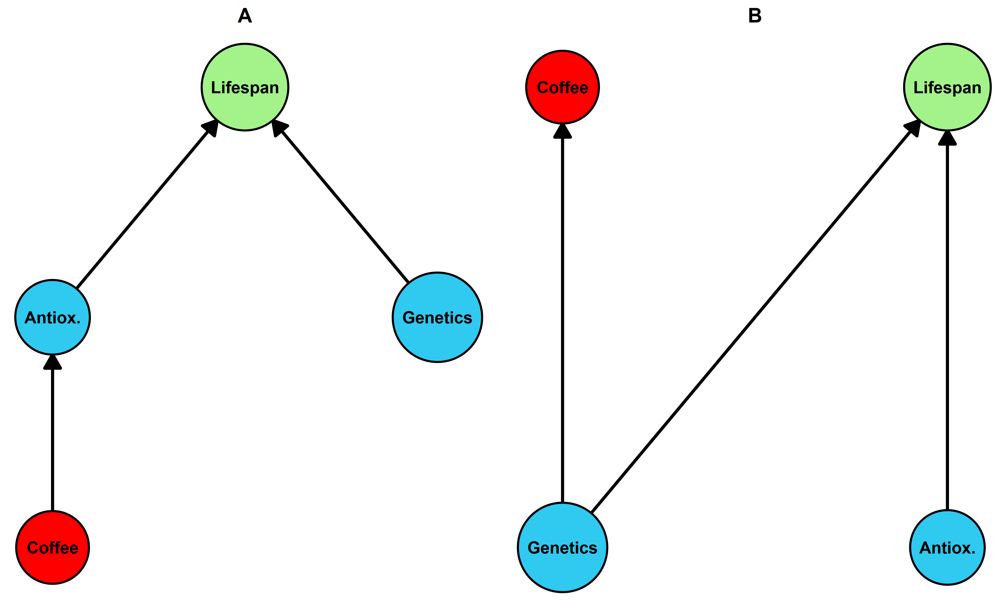
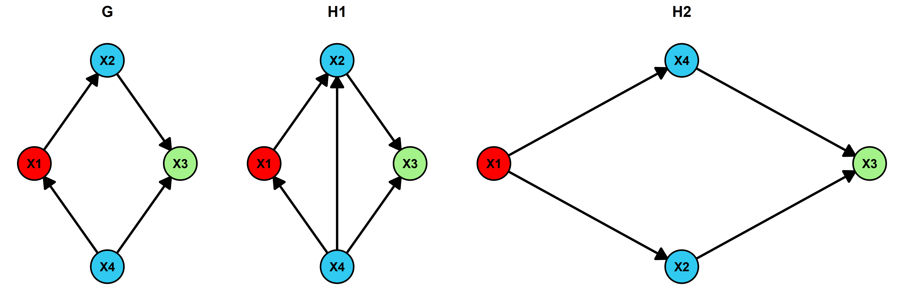

Are causal discovery algorithms good enough for practical problems?
Introduction
Causal graphs can be useful!
A causal graph provides a compact representation of the causal relationships of the system being studied and allows one to reason about what would happen under changes to the system.
For example, take the two graphs below. Graph \(A\) suggests that increasing coffee consumption will indeed increase lifespan, via increasing antioxidant activity. Graph \(B\), however, suggests that changing coffee intake would have no impact on lifespan and the only reasons why we see a relationship between the two is due to their relationship with genetics. For example, certain genes may “cause” people to drink more coffee and be related to longevity.
Beyond being a convenient representation, causal graphs can also be used as a formal tool to guide (observational) data analysis. For example, if graph \(A\) is your chosen representation, then estimating the causal effect of coffee on lifespan only requires collecting data on coffee consumption and lifespan, because there are no confounders. On the other hand, graph \(B\) would require one to “adjust” somehow for genetics by including it in the statistical model. Note that these graphs provide information about “identification” of causal effects and not how to “estimate” them. For more info about using causal graph in applied research, see e.g. Tennant et al. (2021).
Where do the causal graphs come from?
The work of Tennant et al. (2021) also highlights an important challenge: how does one construct the causal graph in the first place? Typically it is done via consultation with substantive experts and by searching literature. However, different experts can produce rather different graphs and evidence to construct such a detailed graph may be lacking altogether in some fields.
For example, due to high degrees of confounding and inherent difficulties with conducting randomized controlled trials, causal interpretation in nutrition research is hard. There are also challenges in the field of healthy longevity, where the goal is to determine which exposures or treatments will contribute to maintaining a high quality of life into old age.
Causal discovery to the rescue?
Does this mean that estimating causal effects from observational data is not possible for these fields? Not necessarily - different causal structures give rise to different testable patterns in the data. One idea then is to first learn the causal graph from the data and then use it to estimate the causal effect of interest. In fact, methods for learning (some parts of) a causal graph from observational data have been developed since the 1980s. This task of inferring a causal graph from data is generally referred to as “causal discovery” or “structure learning”. A relatively gentle introduction to the field of causal discovery was written by Vowels, Camgoz, and Bowden (2022).
Maybe not…
While these methods have a long history and new methods are being developed at an increasing pace, their adoption in applied research has been slow. Part of the reason may be their disconnection from the literature on causal effect estimation. The disconnection may be partly due to historically reasons, as causal effect estimation methods developed in the fields of biostatistics, epidemiology, economics, and sociology, while causal discovery methods have their roots in computer science, AI, and mathematics. Furthermore, the goals are often different: the vast majority of causal discovery methods infer a complete graph structure, whereas the aim in applied research is more targeted (e.g. the effect of a single exposure on an outcome).
Furthermore, most causal discovery methods can recover the “Markov equivalence class” of a graph, which means the output may contain undirected edges. Given that a single edge direction can have meaningful change on causal conclusions, this may limit its usefulness in guiding data analyses in applied research.
Objective of this post
The goal of this post is the following: to explore how “useful” causal discovery methods can be in applied research. Useful is defined in the context of below “workflow”:
- Formulate a research question
- Translate research question into a mathematical object (i.e. causal estimand)
- Write down assumptions about the system in the form of a causal graph
- From the graph, determine which information is necessary to answer the research question
- Choose an appropriate statistical model, run the model, conduct sensitivity analyses, interpret results, etc.
Causal discovery has strong potential to aid in 3., especially when the system under study is not well understood.
Simulating data
The data generating processes considered here will be kept simple to see how discovery methods perform in the best case scenario.
I generated multivariate normal data, with only five variables and a probability of connecting an edge set to 0.5. Again, the idea to keep things simple. F
# Generate a random ground truth DAG
n <- 1000
e_prob <- 0.5
p <- 5
gt <- pcalg::randomDAG(p, prob = e_prob, lB=0.1, uB=1)
df <- as.data.frame(rmvDAG(1000, gt, errDist="normal"))Running causal discovery algorithms
I now run the PC algorithm using the Fisher-Z test (see e.g. https://www.statisticshowto.com/fisher-z/).
Evaluating algorithms
Metrics
We now need some way of comparing the inferred graph to the true graph. Below is a brief background and motivation for some of the commonly used metrics. It is perhaps a bit long but I think aligning metrics with the research question is important, so it is worth the time.
Structural hamming distance
The most common metric used is the structural hamming distance (SHD), which counts the number of edge additions, deletions, or reversals necessary to go from one graph to the other.
SHD formula.
Define \(\mathcal{G}\) as the true graph, \(\mathcal{H}\) as the estimated graph, and \((i,j) \in V \times V\) as edges.
The SHD can be defined as
\[\text{SHD}(\mathcal{G}, \mathcal{H}) = \sum_{i,j \in V \times V} \mathbb{1}(\text{EdgeType}_{\mathcal{G}}(i,j) \ne \text{EdgeType}_{\mathcal{H}}(i,j)),\]
where \(\mathbb{1}\) is the indicator function.
Remember that the context of this post is determining how useful causal discovery algorithms can be for helping practitioners answer specific causal questions. The SHD does not include any notion of causality in its definition.
Take the below plots as an example of how this could be problematic. \(\mathcal{G}\) is the true graph and \(\mathcal{H_1}\) and \(\mathcal{H_2}\) are graphs each one change away from \(G\) (i.e. \(SHD(\mathcal{G}, \mathcal{H_1}) = SHD(\mathcal{G}, \mathcal{H_2}) = 1\)).

Even though the SHD for \(\mathcal{H_1}\) and \(\mathcal{H_2}\) are the same, the graphs lead to different causal conclusions. Let’s say we are interested in estimating the effect of \(X_1\) on \(X_3\), \(P(X_3 | \text{do}(X_3 = c))\). According to \(\mathcal{G}\), a correct adjustment set (think: should include in the statistical model) would be \(\{X_4\}\). The extra arrow in \(\mathcal{H_1}\) does not change this adjustment set. On the other hand, \(\mathcal{H_2}\) suggests that we should not adjust for \(X_4\), which would lead to an incorrect estimate.
Despite this drawback, the SHD is reported in essentially every paper that evaluates causal discovery algorithms.
Structural intervention distance
Adjustment identification distance
Others
Results
Summary
Conclusions
Additional notes
- All causal graphs were made using the ‘caugi’ R package (https://caugi.org/)
- I am using R version 4.5.1
References
Tennant, Peter W G, Eleanor J Murray, Kellyn F Arnold, Laurie Berrie, Matthew P Fox, Sarah C Gadd, Wendy J Harrison, et al. 2021. “Use of Directed Acyclic Graphs (DAGs) to Identify Confounders in Applied Health Research: Review and Recommendations.” International Journal of Epidemiology 50 (2): 620–32. https://doi.org/10.1093/ije/dyaa213.
Vowels, Matthew J., Necati Cihan Camgoz, and Richard Bowden. 2022. “D’ya Like DAGs? A Survey on Structure Learning and Causal Discovery.” ACM Comput. Surv. 55 (4): 82:1–36. https://doi.org/10.1145/3527154.